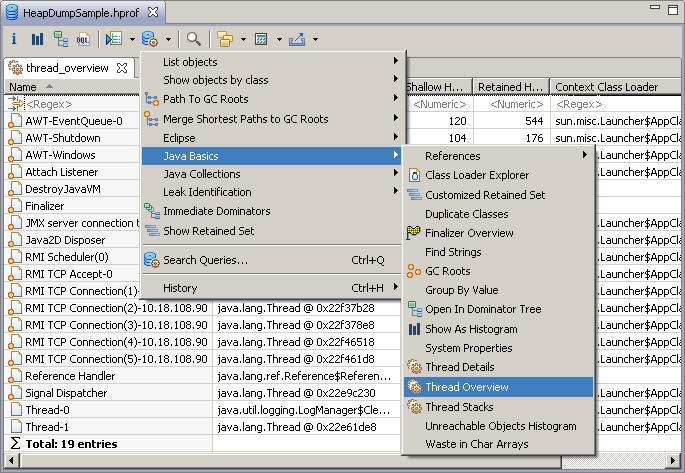

Here are descriptions of some of the more interesting or significant changes made to the Memory Analyzer for the 1.3 release.
Support for Multiple Snapshots in One Heap Dump File
-agentlib:hprof=heap=dump,format=bthen if a heap dump is triggered multiple times all the heap dumps will be written to one file. An IBM z/OS system dump can contain data from multiple address spaces and processes. It is therefore possible that the dump file contains heap dump snapshots from multiple Java runtimes.
Memory Analyzer 1.2 and earlier handled this situation by choosing the first heap dump snapshot found unless another was selected via an environment variable or MAT DTFJ configuration option.
Memory Analyzer 1.3 handles this situation by detecting the multiple dumps, then presenting a dialog for the user to select the required snapshot.

Further details can be found in the documentation under "Acquiring Heap Dumps"
Improved Autocompletion in the OQL Editor
The autocompletion capabilities have been extended.
Autocompletion
for SELECT and WHERE clauses
can also supply field names. The class
for the field names is selected in the FROM clause by typing space
after the class name. This brings up a context information box, and
selects that class as the active class for field names.

Suggestions are then provided in the SELECT or WHERE clauses on typing '.' or '@' or control-space.

Attributes begin with '@' and the autocompletion is filtered based on what has been typed so far.

In SELECT and WHERE clauses there are also suggestions for methods on key Memory Analyzer objects representing contents of the snapshot.

Pressing enter adds the selected text to the command window.

OQL - Accessing Objects by Index in Arrays and Lists
The OQL syntax was extended to support accessing objects inside arrays and Lists by using an index. Here some examples:
SELECT s[2] FROM int[] s WHERE (s.@length > 2)
SELECT s[2] FROM java.lang.Object[] s WHERE (s.@length > 2)
SELECT s.@GCRoots.subList(1,3)[1] FROM OBJECTS ${snapshot} s
For further details see "Reference / OQL Syntax / Property Accessors" in the Memory Analyzer documentation
Reusing OQL Results
It is now easier to reuse the results of executed OQL queries
The navigation history shows previous OQL queries. Clicking on a previous query executes it again. On many result panes, selecting some objects, then copies an OQL representation of the objects. This OQL can then be pasted into the OQL editor text area. This works from the OQL result area itself, and also copies the column details as well as the objects.

Threads Overview Button
Inspecting the threads and their stack-traces proved to be a very useful feature. To simplify the access to this information, a button was added directly to the toolbar, and the two old queries "thread stacks" and "thread overview" were merged into one. This way, just a single click is enough to get the overview of all threads and start inspecting their stacks. For more details see "Tasks / Analyzing Threads" in the Memory Analyzer documentation.

Support for Huge Heap Dumps
Older versions of MAT had limitations on the number of objects in the heap (caused by some internal structures used). This is reworked, and there were reports of successfully processing a 48 GB / 900 million+ objects heap dump.
Performance Improvements
An issue where parsing a dump with more than 850 million objects took ages is now fixed.
An issue where the dominator tree calculation sometimes took ages is now fixed.
There is a performance optimization in the retained set calculation
New and Noteworthy for Memory Analyzer 1.2
The New and Noteworthy document for version 1.2 is available here.